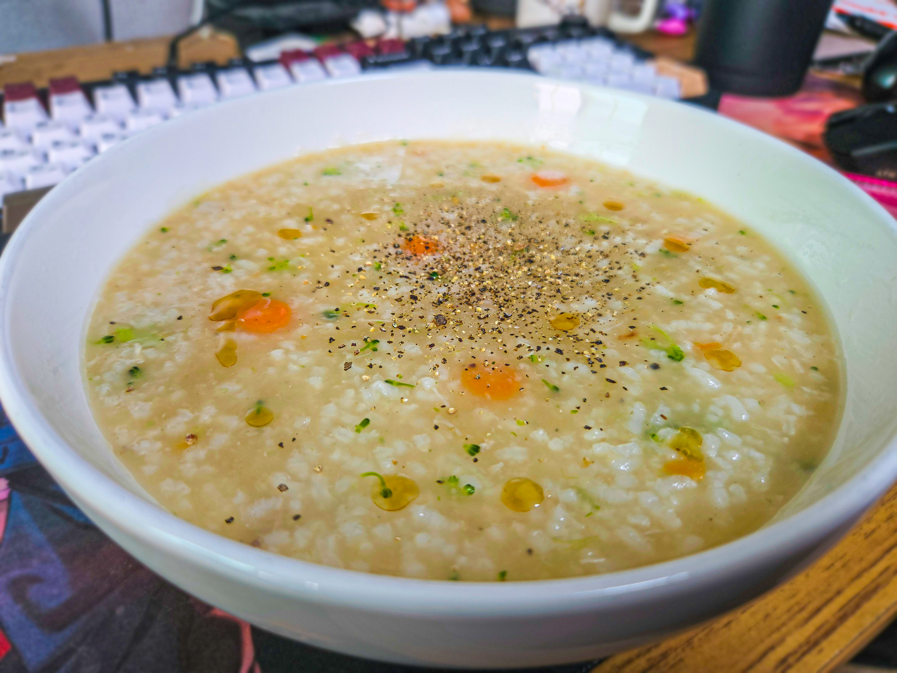

붙어있는 튀김옷, 남은살, 연골을 그대로 남긴체
살짝만 씻은 뼈를 1시간 반정도 우린 육수.
밥 한덩이.
그리고 색감위주의 야채 조금.
소금간 천천히 하면서
퍼져서 죽의 형상이 될때까지
중약불로 저어주기.
마지막에 그릇에 담고
참기름 방울방울, 그리고 후추.

붙어있는 튀김옷, 남은살, 연골을 그대로 남긴체
살짝만 씻은 뼈를 1시간 반정도 우린 육수.
밥 한덩이.
그리고 색감위주의 야채 조금.
소금간 천천히 하면서
퍼져서 죽의 형상이 될때까지
중약불로 저어주기.
마지막에 그릇에 담고
참기름 방울방울, 그리고 후추.
소금간 = 후라이드 시키면 오는 소금,후추로 함
ㅇㅇ 상관무
난 그냥 치킨스톡 한스푼으로 날먹해야지
브랜드 치킨맛이 안난다 그러면 ㅋㅋㅋㅋ 그냥 서양식 닭죽됨 그건
개부이 가족들한테 개드립아이디 들켰담서 먹고남은치킨뼈죽 먹으면 걱정하실지도 몰라
오만가지 다 만들어먹는놈인거 알아서 먹는걸로는 일절 걱정안하심ㅋㅋㅋㅋ
뿌링클 or 간장 or양념 << 이거 3개로 해도됨?
일단 아예 양념을때려넣은 수준이 아니라, 슬쩍 남은 뼈에 묻어있는 수준이라면야 어느것도 다 가능함.
다만 쉬벌 뿌링클처럼 가루계열은 까딱하면 개조지는지라 추천못하겠다;;;
뭘로해도 먹을만은 할걸?
이거 예~전에 가난해서 부끄러웠던 썰 같은 느낌으로 해서
‘우리 집은 치킨 시킨거 아까워서 뼈죽을 해먹었는데, 이게 당연한 줄 알았다가 밖에서 망신 당해서 슬펐다’ 이런 내용으로 올라왔던게 있었음.
그때 댓글에서 반은 ‘불쌍해 ㅠㅠ’ 였는데, 반은 ‘이거 의외로 괜찮음 ㅋㅋㅋ’ 같은거 올라와서 신기해서 해먹어 봤는데,
맛있긴 하더라 ㅋㅋㅋㅋㅋㅋㅋㅋㅋㅋㅋ
뼈가 한 번 가열되서 그런가 육수도 더 잘 나와서 도가니탕 처럼 굳더구만.
구운닭으로도 육수를 내는 마당에
염지한데다 튀기기까지한 닭뼈가 맛없을리 없음ㅋㅋㅋㅋㅋㅋㅋ
아 대학다닐때 진짜 돈없을때 치킨뼈 남은거 끓여서 라면 끓였던거 생각난다
---이상 교양있는 돼지들 리스트---
나같은 경우는 닭다리살파라 가슴살은 온전히 남겨두고 물에 치킨스톡풀고 가슴살 잘게 찢어서 양파 당근 다진거랑 넣어서 끓인담에 밥넣어서 죽만들어먹음
어차피 치킨스톡도 닭고아낸 육수 농축액이라 굳이 뼈는 안넣어도 충분히 맛있는 닭죽맛남
뼈 건지는 수고없이 이렇게도 만들어보는걸 추천함
ㅇㅇㅇ 이거 좋음.
내 레시피는 순수 브랜드치킨맛 유지할라고 하는 거라ㅋㅋㅋㅋ

뼈는 그냥 따로 손으로 발라낸거 쓰는거지? 설마 막 입대고 뜯어먹은걸로 해버림?
먹기전에 비닐장갑끼고 살 다 발라냄
내가 혼자 먹은거면 뭐 상관없지. 애초에 씻기도 하고
가족이거나, 다른 인원이 있으면 미리 발라내야지
치킨을 손으로 뼈발라가면서먹냐!!
순.살
뼈치킨 이야기하는데 순살이 왜 나오니..
아니 가난한 자취생 밥상 생각하고 왔는데 나보다 맛있게먹네 ㅁㅊㅋㅋㅋ
박스로 모자 만들어서 쓰고먹었겠지..?
좀 더 짭쪼름하고 기름진 닭죽 느낌일 거 같은데
브랜드 치킨맛이 나는 닭죽.
딱 이걸로 설명가능
토리파이탄 먹어보고 닭육수가 이렇게 맛있는지 처음알았다
안씻고 끓이면 어떻게됨?
일단 자기가 직접 먹은거면 찝찝할거고
조리적인 측면에서는 흐르는물에 한번 휘휘 안씻으면 기름기랑 양념맛이 너무 강해짐.
비유하자면 물에 살짝 씻어낸 김치처럼 만들어줘야함
뼈는 건져내시죠?
당연하짘ㅋㅋㅋㅋ
양념죽도 해보심?
해보긴했는데 말그대로 '씻어낸 김치'처럼 만들고 해야함
빨간맛 들어간 개성있는죽을 만들라고하면 걍 짬통죽되겠지??
ㅇㅇ
소신발언: 색감용 야채 극혐. 특히 당근
나도 자주 해먹는데 이집은 튀김옷도 넣는구만
'살짝만'
이거 상상만했던건데 진짜 실제로 먹는구나 근데 비주얼보니깐 생각보다 맛있게생김 나도 한번 해봐야겠다
내 신부감으로 합격
이거보고 치킨 시켰다. 순살로
코스트코 로티셰리 치킨으로 하면 가성비 GOAT임. 츄라이 츄라이
알뜰하네
어.. 혹시 복잡계 관심있는 사람이야?
혼자살면 해먹을만한듯 ㅋㅋ
그건 브랜드 치킨맛이 안나잖아.
황올죽, 처갓집 양념죽, BHC죽, 네네죽 이런게 된다니까?